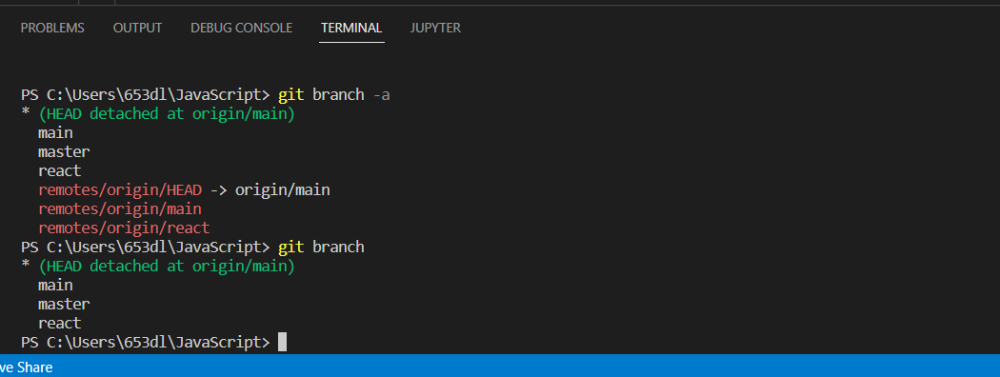

-
- 22/06/29
- var, let, const의 차이
-
- 22/07/06
- Detached HEAD 상태
Detached HEAD
-
Detached HEAD란?
HEAD가 특정 branch가 아닌 특정 commit을 직접 참조하고 있는 상태
-
Detached HEAD를 사용하는 이유는?
보통 해당 repo에서 기록을 남기지 않고 시뮬레이션을 해보고 싶을 때 detached 상태를 이용
But!!! Git에서 지양하는 상태이므로 test branch를 만들어 사용하는 것이 좋다.
-
Detached HEAD에서 벗어나려면?
이전 commit버전으로 되돌리거나 임시로 새로운 branch를 만들고 지운다.
관련 코드
git branch -f master temp
git checkout master
